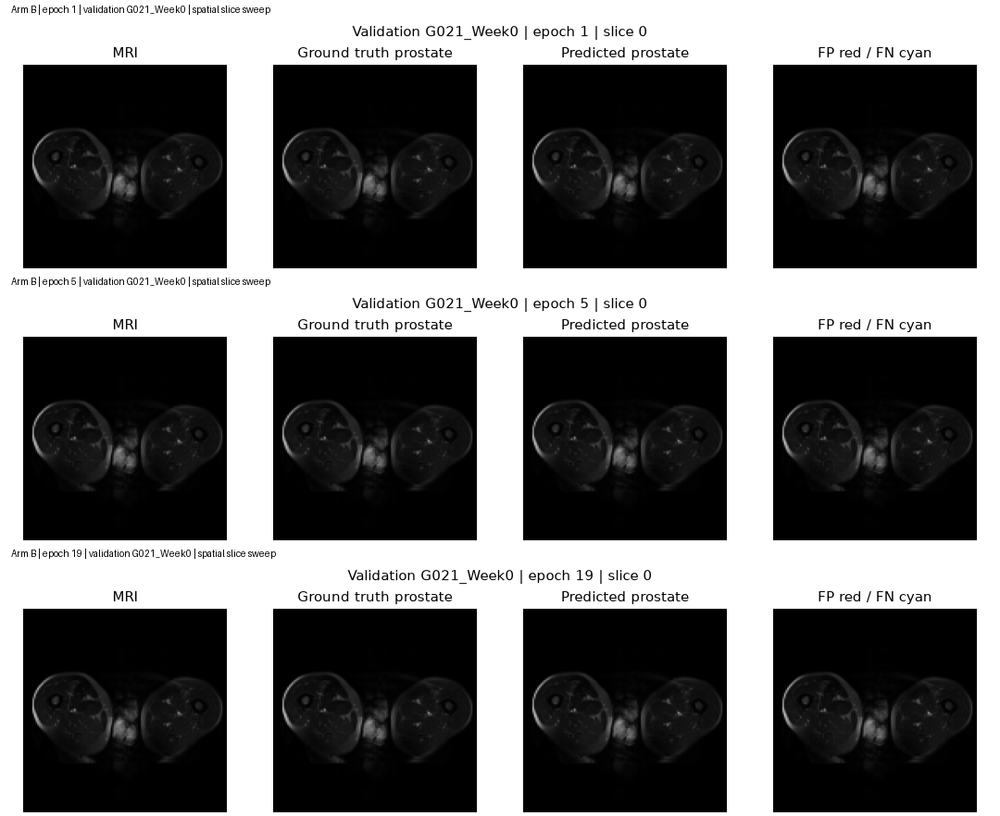
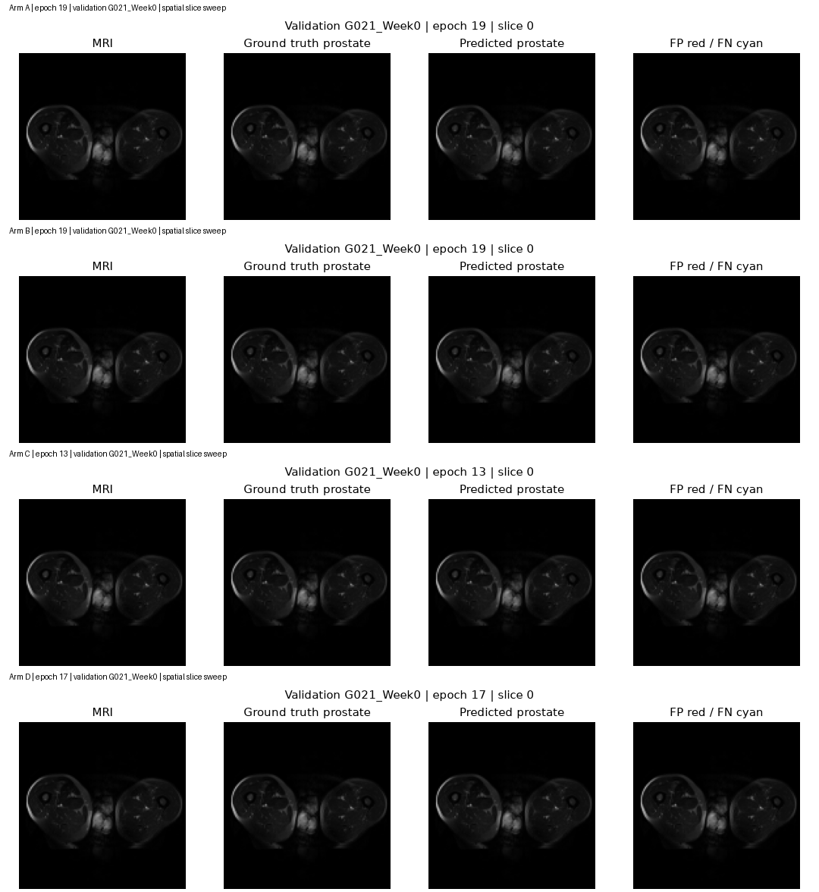
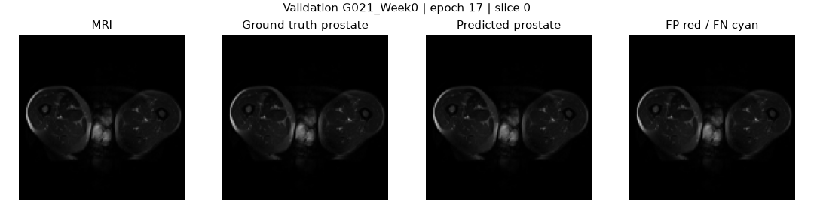
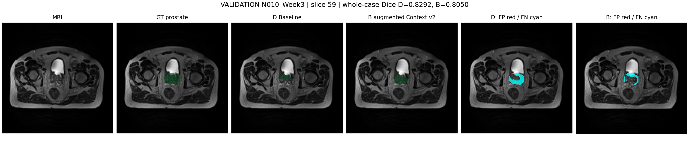
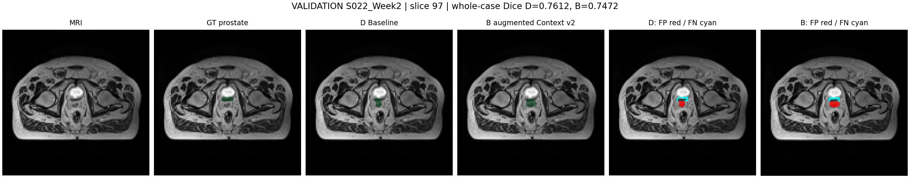
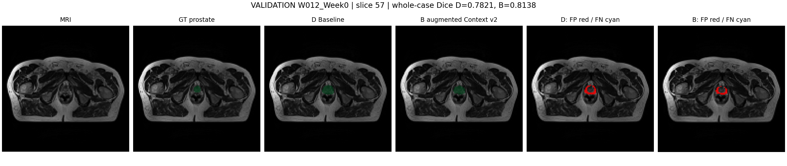
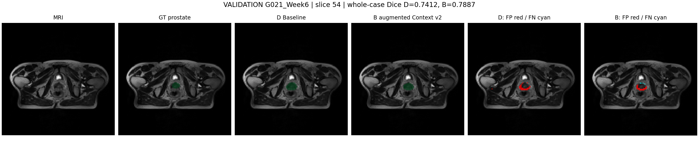
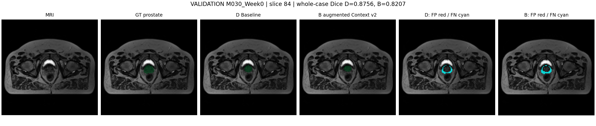

All GIFs show validation G021_Week0. Frames sweep spatial slices, not training epochs. Each original GIF is copied byte-for-byte from the retained Rangpur output. B is best on mean validation Dice; no candidate passes the memory gate. No held-out test was run.







